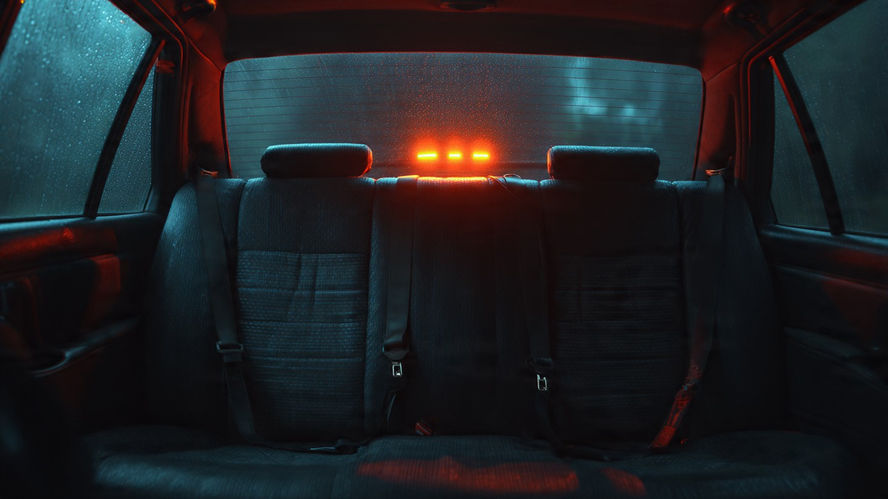

NHTSA’s Newest Mandate Will Save 50 Lives a Year. That’s a Rounding Error.

I ran the numbers. Then I ran them again. They didn’t get better. NHTSA finalized a rule this month requiring audio and visual seatbelt warning alarms for all seating positions in passenger vehicles starting with the 2027 model year.[1] Currently, only the driver’s seat requires a chime. Expanding it to front outboard and rear seats sounds sensible. Then you read the agency’s own regulatory impact analysis: 50 lives saved per year, 500 injuries prevented.
Fifty. In 2024, 9,758 unbuckled passenger vehicle occupants died in traffic crashes, according to NHTSA’s Click It or Ticket campaign data.[2] Fifty out of 9,758 is 0.51 percent. Against all 39,254 traffic fatalities that year, it is 0.13 percent. If you rounded total traffic deaths to the nearest hundred, the mandate’s projected benefit would disappear entirely.
Some context on why the number is so small. Rear-seat occupants account for roughly 7 to 10 percent of all vehicle occupant fatalities in FARS data, which puts the rear-seat unbuckled death count somewhere between 700 and 1,000 per year.[3] Saving 50 out of that range means the alarm is projected to be 5 to 7 percent effective on its own target population. Not 5 to 7 percent of the seatbelt problem. Not 5 to 7 percent of traffic deaths. Five to seven percent of the specific subset of people who die unbuckled in the back seat.
Front-seat seatbelt chimes have been mandatory since 1972 under FMVSS 208. Front-seat belt use now exceeds 93 percent nationally.[4] Rear-seat belt use hovers around 73 to 78 percent, depending on the state and survey methodology.[5] That 20-point gap is the theoretical space the mandate occupies. But the people still unbuckled in 2026 are not unbuckled because they lack information. Iowa reported that 47 percent of its 2025 traffic deaths were unbuckled occupants.[6] Missouri’s seatbelt use rate sits at 88.5 percent, below the national average, in a state where secondary enforcement law means officers cannot stop you for a seatbelt violation alone.[7] Teens and pickup truck drivers remain the least likely to buckle up across every survey year. A dashboard chime does not solve a culture.
Now compare the mandate’s projected yield against interventions that remain unimplemented:
| Intervention | Estimated lives saved/year | Ratio vs. rear-seat alarm |
|---|---|---|
| Mandatory ISA (intelligent speed adaptation) | 7,600 | 152× |
| Speed cameras in top 20 metro areas | 1,500–3,000 | 30–60× |
| Universal AEB standard, all vehicles | 1,500+ | 30× |
| Ignition interlocks, all DUI convictions | 800–1,200 | 16–24× |
| Rear-seat seatbelt alarm | 50 | 1× |
ISA alone would save 152 times more lives per year. Speed cameras in major metros would save 30 to 60 times more. Universal ignition interlocks would save 16 to 24 times more. Every one of those interventions faces political opposition that the seatbelt alarm does not, which is precisely the point. NHTSA picked the intervention nobody objects to, and it happens to be the intervention that barely matters.
To be clear: 50 people not dying is not nothing. Each one is a person who buckles up because an annoying beep convinced them, and that person goes home. Regulatory nihilism is not the argument here, but regulatory opportunity cost is real. Every rulemaking cycle that NHTSA spends finalizing a 50-life mandate is a cycle not spent on speed governance, impaired-driving interlocks, or ISA requirements that could prevent thousands of deaths. NHTSA’s total fatality count dropped to 36,640 in 2025, a 6.7 percent decline.[8] Fifteen consecutive quarterly declines. Progress is happening, and then the agency celebrates a mandate whose impact would vanish in the decimal dust of those same quarterly reports.
Limitations
NHTSA’s 50-life estimate comes from their regulatory impact analysis, which assumes partial compliance lift from the alarm. Actual behavioral response could be higher or lower. Rear-seat occupant fatality share (7 to 10 percent) is our estimate from FARS occupant-level data; NHTSA does not publish a clean rear-seat-specific breakdown annually. The ISA, speed camera, and interlock life-saving estimates come from IIHS research and meta-analyses, not from finalized NHTSA cost-benefit studies, so direct comparison involves different methodological frameworks. Seatbelt use rates vary significantly by state, age, vehicle type, and time of day; national averages mask wide distributions. Secondary enforcement states show lower compliance, but the mandate does not change enforcement law.
Strongest Counterargument
Small interventions compound. Front-seat chimes took decades to reach 93 percent compliance; rear-seat alarms could follow the same adoption curve and eventually prevent hundreds of deaths per year as fleet turnover replaces pre-mandate vehicles. NHTSA is not choosing between this mandate and ISA; it can pursue both, and the seatbelt rule was likely finalized first because it faced less industry resistance. Regulatory agencies optimize for what they can actually pass, not what would save the most lives in a frictionless political vacuum. Criticizing a regulation for being too easy to implement is a strange objection.
Fair point on the pipeline argument. But NHTSA has had the authority to mandate ISA since at least 2012 and has not issued a proposed rule. Speed camera policy remains entirely at the state and local level with no federal framework. The political-feasibility defense becomes less convincing each year the high-impact interventions remain unproposed. If the rear-seat alarm is genuinely concurrent, show us the ISA docket number. Until then, the 50-life mandate is not a complement to bolder action; it is a substitute for it.
What You Should Do
Buckle your rear-seat passengers now; do not wait for a 2027 model year vehicle to beep at you. NHTSA data shows 56 percent of unbuckled fatalities occur at night, so nighttime rides with passengers deserve extra attention.[2] If you drive a pickup truck, you are statistically the least likely to use seatbelts and the most overrepresented in FARS fatality data for unbuckled deaths. Check your state’s seatbelt enforcement type at iihs.org; if you live in a secondary-enforcement state, nobody is going to pull you over for it, which means compliance is entirely on you. For parents: children in rear seats should be in age-appropriate car seats or boosters through at least age 8 or 4’9” height; the alarm mandate does not replace proper child restraint systems.
Sources & References
- NHTSA, Final Rule: Rear-Seat Seatbelt Warning Systems, FMVSS 208 Amendment, May 2026. nhtsa.gov
- NHTSA, Click It or Ticket Campaign, May 2026. 9,758 unbuckled passenger vehicle occupant deaths in 2024; 56% at night. nhtsa.gov
- NHTSA, Fatality Analysis Reporting System (FARS), 2014–2023. Occupant seating position data. nhtsa.gov
- NHTSA, National Occupant Protection Use Survey (NOPUS), 2024. Front-seat belt use 91.2% nationally. nhtsa.gov
- IIHS, Seat Belt Use. Rear-seat belt use 73–78% depending on state and methodology. iihs.org
- Iowa Department of Public Safety, 2025 Traffic Fatality Report. 47% of traffic deaths were unbuckled occupants (121 deaths). dps.iowa.gov
- Missouri Governor’s Highway Safety Office, Seatbelt Use Survey, 2025. 88.5% compliance, secondary enforcement state. modot.org
- NHTSA, 2025 Traffic Fatality Estimates. 36,640 deaths, 6.7% decline from 2024, rate 1.10 per 100M VMT. nhtsa.gov